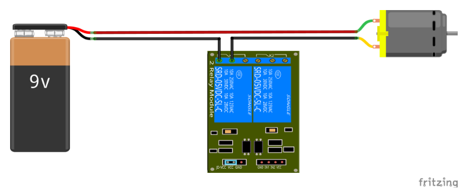

O módulo relé é um componente versátil amplamente utilizado em uma variedade de aplicações.
Ele é comumente empregado em projetos de automação residencial e industrial para controlar
dispositivos elétricos de alta potência, como lâmpadas, motores, eletrodomésticos e equipamentos
industriais, através de sinais de baixa potência.

A principal função do rele é ligar ou desligar dispositivos funcionando como interruptores, para se ligar
uma lampada, um motor eletrico ou algo de energia 110v ou 220v. como este modulo é duplo podemos
fazer duas ligações diferentes